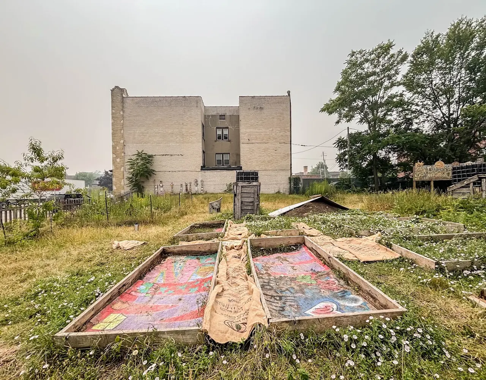

Four schools. One living ecosystem.
Choose the doorway that matches what you want to practice, study, create, or serve. The schools stay connected through embodied practice, inquiry, relationship, and community responsibility.
Follow your curiosity.
Choose a field of study, then explore its classes, projects, and learning pathways.
School of Wellness
Yoga for Life, breathwork, meditation, and resilience.
Explore Wellness →
School of Prakṛti — Ecology & Stewardship
YAGI, ecological care, community Foodways, and field learning.
Explore Prakṛti →Specialized Studies
Māṇḍūkya Upaniṣad, dream states, philosophy, and contemplative inquiry.
Explore Studies →Creative Arts
Nāda, MOGA, performance, storytelling, and Dream Master.
Explore Arts →Start with a school. Move across the ecosystem.
A student may begin with a Yoga for Life class, serve at YAGI, study a text in the Library of Consciousness, or contribute to an arts project. The pathways are distinct, but they are not isolated.
Learning becomes practice, service, and leadership.
Heroic Yogi Apprenticeship, Dream Connections, community service, and partner projects can draw from more than one School of Practice. These pathways sit across the ecosystem rather than becoming additional departments.
How would you like to enter the school?
Begin with a public class, deepen your studies, enter supervised service, or explore a specialized placement.
Find a Class
Public yoga, meditation, current locations, and session details.
View Calendar →02 · TrainHeroic Yogi Apprenticeship
Structured study, supervised instruction, reflection, and applied service.
Explore Training →03 · SpecializeField Placements
Ecology, Foodways, sound and arts, or specialized inquiry through approved pathways.
Explore Placements →04 · ServeCommunity Stewardship
Join volunteer and community projects without enrolling in the apprenticeship.
Volunteer →